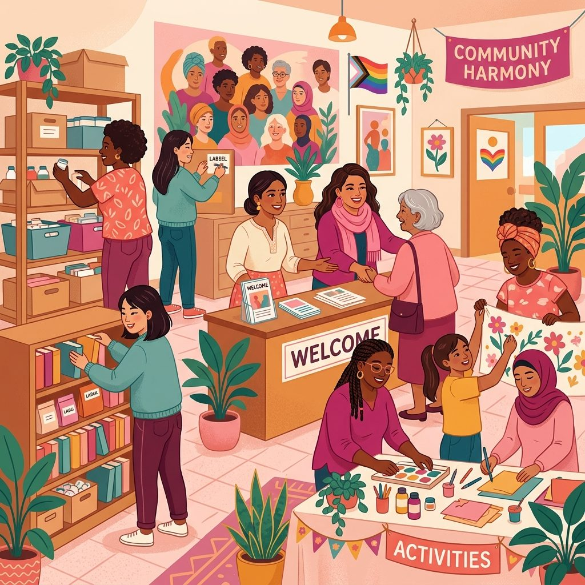
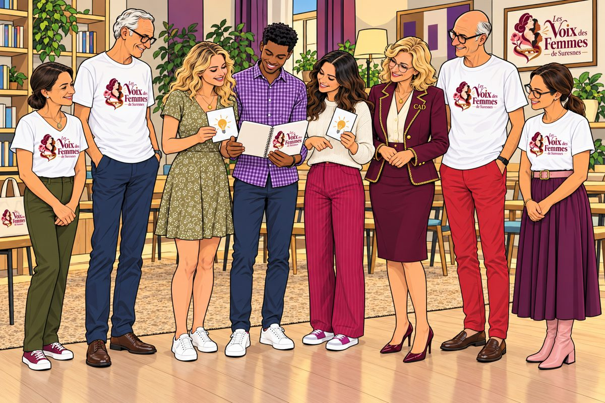

Un lieu pour toutes les femmes, d’ici et d’ailleurs, d’aujourd’hui et de demain.
Ici, nous croyons que chaque femme porte en elle une force unique. Notre association s'appuie sur quatre piliers fondamentaux.
Avec le cœur et sans jugement. Chaque parole a de la valeur, chaque histoire mérite d'être entendue.
Les femmes, les idées, les énergies. Créer des liens qui enrichissent et renforcent.
Les talents, la confiance, les possibles. Aider chaque femme à découvrir son plein potentiel.
Ensemble, aujourd'hui pour demain. Transformer les idées en actions concrètes et solidaires.
Des bénévoles qui font vivre Les Voix des Femmes de Suresnes. Elles sont les cœurs battants de l'association.
Chez Les Voix des Femmes, les bénévoles sont les cœurs battants de l'association.
Talents, passion, bienveillance, inspiration, savoir-faire, envie d'accueillir, de transmettre, de créer, de découvrir…
Faites-nous signe. Venez avec ce que vous êtes et ce que vous savez. Nous découvrirons ce que nous pourrons faire ensemble.


Les femmes y font entendre leur voix ; les échanges entre générations et les contributions des bénévoles enrichissent la vie de l’association.
Nous vous invitons avec la bienvenue en or, au rendez-vous on est, on parle, on rit, on crée, et on repart un peu plus légère !